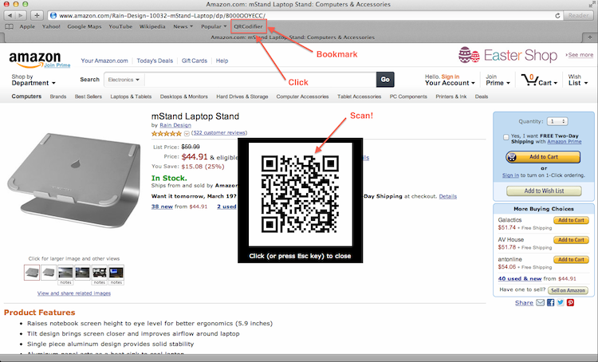

Bookmark » Click » Scan!
Ever ran into this classic problem? The weather's good, the sun is shining (or not) and you are surfing the interwebs. You stumble upon something, and need to transfer the URL of that website onto your smartphone?
Well, QRCodifier is here to help you! It is bookmarklet written in JavaScript and is super-easy to use.
- Drag this QRCodifier bookmarklet onto the Bookmarks toolbar of your browser.
- Visit any website, say, http://soundclound.com/teemus, http://www.amazon.com/dp/B004A95HDW/ or http://store.apple.com/us/browse/home/shop_iphone for that matter.
- Click on the QRCodifier bookmarklet that you just added.
- Voila! The QR code for the website appears on the center of your screen.
- Scan the QR code with an app such as Scan or RedLaser using your smartphone.
- Boom. Open the same website on your smartphone's browser!
Here's a screenshot of QRCodifier.
